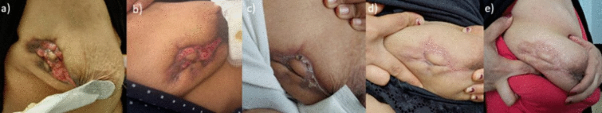
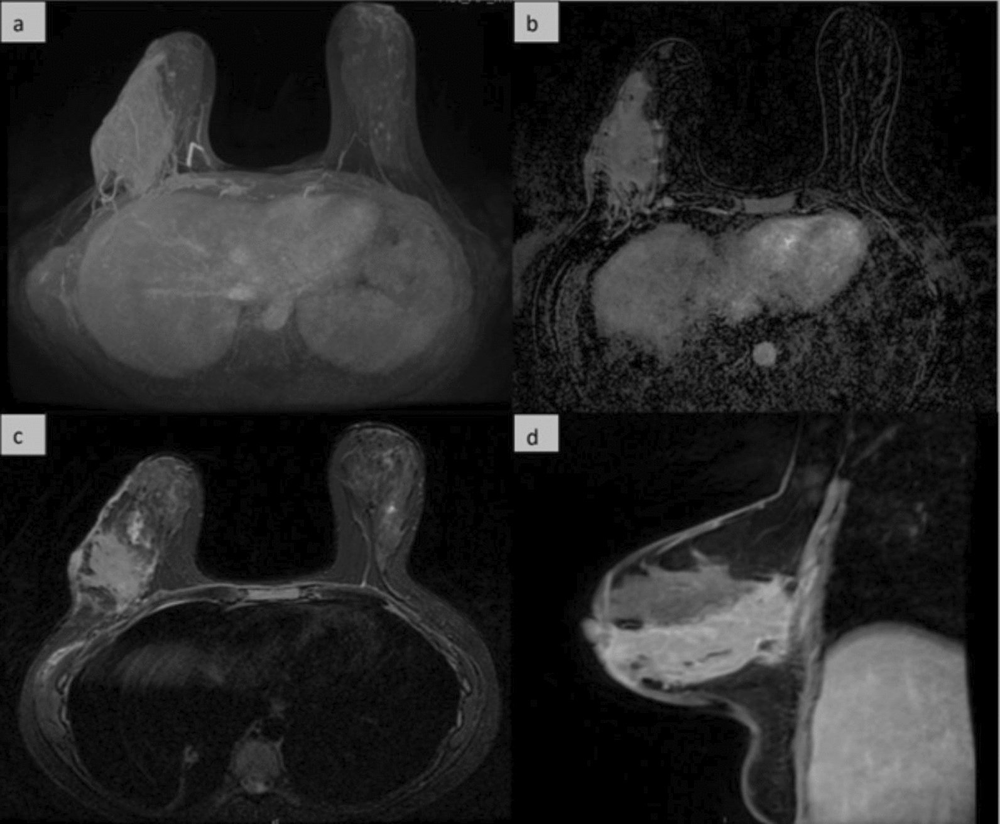

1674 — Viêm tuyến vú do lao: "kẻ bắt chước vĩ đại" của ung thư thể viêm / Tuberculous mastitis
Tags: pattern:khoi-viem pattern:ap-xe pattern:duong-ro pattern:day-da-lan-toa pattern:hach-hoai-tu pattern:khong-khoi vung:vu vung:hach-nach protocol:sieu-am-vu protocol:MRI-vu protocol:sinh-thiet protocol:PCR-lao score:BI-RADS
Mức chắc chắn (certainty): tổng hợp y văn (literature synthesis) — ghép 1 ca 30 tuổi có đủ 5 xét nghiệm vi sinh âm nhưng vẫn chẩn đoán và điều trị lao (Infect Dis Poverty 2026, PMC12797753, CC BY 4.0), loạt 17 ca tại Casablanca (Pan Afr Med J 2020, PMC7896522, CC BY 4.0) và bài nền 1616 (ung thư vú thể viêm). Không có thử nghiệm ngẫu nhiên.
Câu chốt: một khối vú đỏ, cứng, đau, tái phát sau nhiều đợt kháng sinh, kèm đường rò/hạch nách phải được coi là chẩn đoán phân biệt giữa lao vú và ung thư thể viêm — không được mổ cắt vú khi chưa có mô học. Ở lao vú, xét nghiệm vi sinh âm (kể cả PCR và IGRA) KHÔNG loại trừ: chẩn đoán là tổng hợp dịch tễ + hình ảnh + mô học + đáp ứng điều trị, và điều trị lao là điều trị nội khoa, phẫu thuật chỉ để dẫn lưu/loại bỏ ổ tồn dư.
1. Tổng quan bệnh học – cơ chế hình ảnh (TẠI SAO)
1.1 Vì sao tuyến vú "hiếm" bị lao
- Tuyến vú đề kháng tương đối với Mycobacterium tuberculosis (mô mỡ + tuyến ít mạch bạch huyết so với phổi/hạch), nên lao vú hiếm dù lao phổi phổ biến. Số liệu: ≈ 0,1% bệnh lý vú ở nước phát triển, nhưng 3–4% ở vùng lưu hành (Ấn Độ, châu Phi); loạt 17 ca Casablanca ghi 0,64% tổng số bệnh tuyến vú tại trung tâm của họ. Bài 2026 ghi lao vú chiếm 0,06–0,1% các thể lao.
- Đường lây: máu, bạch huyết (từ hạch nách/trung thất), lan trực tiếp từ xương sườn–xương ức, hoặc qua tổn thương da/núm. Phần lớn là thứ phát; thể "nguyên phát" rất hiếm.
- Nhóm nguy cơ: nữ trẻ, sinh nhiều, đang cho con bú (giãn ống tuyến + tăng tưới máu); HIV/ức chế miễn dịch; đến từ vùng lưu hành. Loạt 17 ca: tuổi trung bình 33,5 (18–54), 59% sinh nhiều lần, 52,9% có tiền sử cho con bú, 41,2% đến khám sau > 6 tháng.
- 5 thể McKeown: thể nốt, lan tỏa, xơ hóa (sclerosing), viêm tắc ống (obliterans), lao kê cấp. Ca 2026 là thể lan tỏa (đỏ da lan rộng + đường rò vào sâu).
1.2 TẠI SAO hình ảnh giống ung thư và giống áp-xe
- U hạt lao + hoại tử bã đậu + xơ hóa là ba thành phần quyết định tín hiệu:
- Hoại tử bã đậu giàu nước, tế bào chết → T2 sáng, DWI hạn chế (ADC thấp); trên siêu âm là ổ hỗn hợp/giảm âm không đồng nhất, có thể có cặn — không phải nang đơn thuần.
- U hạt viêm ngấm thuốc → bờ không đều, ngấm thuốc dày trên MRI; dày da + phù mô kẽ do viêm bạch huyết → giống hệt ung thư thể viêm.
- Xơ hóa tiến triển → T2 giảm, ngấm thuốc muộn, co kéo da/núm → giống ung thư xâm lấn.
- Đường rò (sinus tract) là manh mối hình ảnh mạnh: một đường hẹp giảm âm/tăng tín hiệu T2 từ ổ áp-xe ra da, kèm dày da khu trú — ít gặp ở ung thư thể viêm (ung thư gây dày da lan tỏa, không tạo đường rò).
- Hạch nách: lao gây hạch hoại tử trung tâm (vỏ ngấm thuốc, trung tâm không ngấm) — khác hạch di căn thường đặc, mất rốn; nhưng không đủ để phân biệt, cần mô học.
- Vì sao xét nghiệm vi sinh hay âm: lượng vi khuẩn trong mô vú rất thấp ("paucibacillary"); AFB soi trực tiếp thường âm; cấy MGIT/LJ mất 2–6 tuần và vẫn có thể âm; PCR phụ thuộc mẫu và kỹ thuật. Ca 2026 âm toàn bộ (ZN, cấy, PCR, IGRA) nhưng vẫn đúng là lao nhờ dịch tễ + hình ảnh phổi + mô học + đáp ứng điều trị.
- IGRA không dùng để loại trừ: độ nhạy 58–78% ở lao hoạt động, thấp hơn ở lao ngoài phổi/trẻ em; âm không loại trừ.
1.3 Ngưỡng và số liệu nằm lòng
| Đại lượng | Số liệu | Nguồn |
|---|---|---|
| Tần suất lao vú trong bệnh lý vú | ≈ 0,1% (nước phát triển); 3–4% (vùng lưu hành) | PMC7896522 |
| Tần suất tại trung tâm Casablanca | 0,64% tổng số bệnh tuyến vú (17 ca/3 năm) | PMC7896522 |
| Tỷ lệ các thể lao trong tổng số lao | 0,06–0,1% | PMC12797753 |
| Tuổi trung bình | 33,5 (18–54) | PMC7896522 |
| Thời gian từ khởi phát đến chẩn đoán | 41,2% > 6 tháng | PMC7896522 |
| Kích thước khối trung bình | 5,4 cm | PMC7896522 |
| Vị trí hay gặp | 52,9% góc trên–ngoài | PMC7896522 |
| Hạch nách trên siêu âm | 18,75% | PMC7896522 |
| Cấy/vi khuẩn học dương tính | 52,95% | PMC7896522 |
| Điều trị 9 tháng / 12 tháng | 76,5% / 23,5% | PMC7896522 |
| Tái phát sau điều trị | 23,5% | PMC7896522 |
| Độ nhạy IGRA ở lao hoạt động | 58–78% | PMC12797753 |
2. Mẫu hình + chẩn đoán phân biệt theo vị trí (gamut)
- Theo hình thái: khối đặc viêm (thể nốt) → áp-xe + đường rò (thể lan tỏa) → xơ hóa co kéo (thể xơ) → lan tỏa dạng viêm da (giống IBC).
- Theo vị trí: góc trên–ngoài hay gặp nhất; sau núm/trung tâm gợi ý lan theo ống tuyến; hạch nách hoại tử cùng bên; thành ngực/xương sườn khi lan trực tiếp.
- Gamut "khối vú viêm tái phát":
- Lao vú — mạn, đường rò, hạch hoại tử, vùng lưu hành.
- Áp-xe vi khuẩn — cấp, sốt, đau nhiều, đáp ứng dẫn lưu + kháng sinh; tái phát nếu bỏ sót ổ.
- Viêm tuyến vú u hạt tự phát (IGM) — nữ sinh đẻ trong 5 năm sau cho bú, u hạt không bã đậu, cấy vô khuẩn, đáp ứng corticoid (bài 1613).
- Ung thư vú thể viêm (IBC) — đỏ > 1/3 vú, da cam, không sốt; sinh thiết da/mô tuyến là chốt.
- Viêm tuyến vú do IgG4 — xơ hóa dày, nhiều tương bào IgG4; hiếm.
- Galactocele — đang cho bú, nang có mức mỡ–dịch; không viêm mạn.
- Lao hạch nách đơn thuần, sarcoid, nấm, dị vật.
3. Bảng so sánh phân biệt (ma trận đối chiếu)
| Thực thể (entity) | Hình ảnh điển hình (US / X-quang / MRI) | Chốt vào (rule-in) | Chốt loại (rule-out) | Gợi ý xác nhận |
|---|---|---|---|---|
| Lao vú | Khối giảm âm không đồng nhất, bờ không đều, đường rò ra da, dày da; MRI ổ viền ngấm thuốc + phù T2 + hạch hoại tử | Đường rò mạn + hạch hoại tử + dịch tễ lao + u hạt bã đậu/Langhans | Không có u hạt bã đậu + cấy/PCR dương tính với vi khuẩn khác → không phải lao | Core biopsy: ZN + cấy MGIT/LJ + PCR; IGRA chỉ hỗ trợ |
| Áp-xe vi khuẩn | Ổ dịch viền dày, có thể khí, phù mô mềm; khởi phát cấp | Sốt + đau cấp + ổ dịch + cấy mủ dương tính | Mạn > 6 tháng + đường rò + không sốt → nghĩ lao/IGM | Chọc hút/cấy mủ; siêu âm theo dõi |
| IGM (viêm u hạt tự phát) | Khối thùy (lobulocentric), giảm âm, không bã đậu, có thể nhiều ổ; MRI viền ngấm thuốc | Sinh đẻ trong 5 năm + u hạt không bã đậu + cấy vô khuẩn | U hạt bã đậu + Langhans + AFB/PCR lao → lao, không phải IGM | Core biopsy + nhuộm AFB/PAS; thử corticoid |
| Ung thư thể viêm (IBC) | Dày da lan tỏa > 1/3 vú, da cam, phù; MRI dày da + ngấm thuốc lan, hạch nách | Đỏ lan nhanh + da cam + sinh thiết da/mô có tế bào ác | Đường rò + u hạt bã đậu + đáp ứng kháng lao → không phải IBC | Punch biopsy da + core mô tuyến, không chờ đáp ứng kháng sinh |
| Galactocele | Nang có mức mỡ–dịch, bờ đều, sau ống tuyến; đang cho bú | Đang cho bú + nang mức mỡ–dịch + không viêm | Thành dày, ngấm thuốc, đường rò → không phải galactocele đơn thuần | Siêu âm; chọc hút sữa |

Diễn tiến (a → e): loét/đường rò trước điều trị (a), rồi 20 ngày (b), 2 tháng (c), 4 tháng (d) và 12 tháng (e) sau phác đồ kháng lao. Nguồn: Infect Dis Poverty 2026 (PMC12797753), CC BY 4.0.4. Protocol chụp + điều trị
- Siêu âm tuyến vú + hố nách là bước đầu: mô tả kích thước, bờ, thành phần trong ổ, đường rò, dày da, hạch; Doppler tìm tăng sinh mạch quanh ổ.
- Nhũ ảnh (nếu ≥ 30–35 tuổi): khối mật độ cao bờ không đều, dày da; vi vôi hóa ác tính ít gặp trong lao — nhưng không loại trừ ung thư.
- MRI vú (DCE + DWI + T2 fat-sat) khi: khối lớn/không rõ bờ, nghi lan thành ngực, cần đánh giá đường rò và hạch, hoặc phân biệt với IBC. Ca 2026: tổn thương 12 × 5,3 cm từ núm tới cơ sâu, dày da, ngấm thuốc lan; MRI tháng 9 chỉ còn mô xơ ngấm thuốc muộn.
- Lấy mô là bắt buộc trước khi kết luận: core needle biopsy (ưu tiên) hoặc VABB gửi mô học + ZN + cấy MGIT/LJ + PCR (Xpert MTB/RIF); chọc hút ổ áp-xe gửi cấy + PCR. Không chẩn đoán lao chỉ bằng FNA tế bào.
- Xét nghiệm toàn thân: X-quang/CT ngực (tìm lao phổi, micronodule), HIV, IGRA (chỉ hỗ trợ), men gan trước điều trị.
- Điều trị: phác đồ chuẩn 2HRZE/4HR (6 tháng) theo WHO; nhiều loạt dùng 9–12 tháng cho lao vú (loạt 17 ca: 76,5% 9 tháng, 23,5% 12 tháng) — cá thể hóa theo đáp ứng. Phẫu thuật không phải điều trị chính: chỉ dẫn lưu áp-xe, cắt ổ tồn dư/đường rò khi không lành, hoặc lấy mô chẩn đoán.
- Theo dõi: khám + siêu âm mỗi 1–2 tháng; MRI/CT lặp 3–6 tháng nếu tổn thương lớn; đáp ứng kém sau 2–3 tháng → sinh thiết lại để loại trừ ung thư, không tự tăng thuốc.
flowchart TD
A[Khối vú viêm/áp-xe tái phát + đường rò] --> B[Siêu âm vú + hố nách; nhũ ảnh nếu >= 30 tuổi]
B --> C[Nghi lao: dịch tễ, đường rò, hạch hoại tử, lao phổi]
C --> D[Core biopsy: mô học + ZN + cấy MGIT/LJ + PCR]
D --> E{U hạt bã đậu/Langhans hoặc vi sinh dương?}
E -->|Có| F[Phác đồ 2HRZE/4HR; dẫn lưu ổ áp-xe nếu cần]
E -->|Không nhưng lâm sàng/dịch tễ mạnh| G[Điều trị thử + theo dõi 2-3 tháng]
G --> H{Đáp ứng?}
H -->|Có| F
H -->|Không| I[Sinh thiết lại: loại trừ ung thư/IBC và IGM]
F --> J[Theo dõi 1-2 tháng; MRI/CT 3-6 tháng nếu lớn]
5. Biến thể bình thường và cạm bẫy
- "Xét nghiệm âm = không lao" là bẫy chết người: ca 2026 có ZN, cấy, PCR và IGRA đều âm; chẩn đoán dựa vào dịch tễ + micronodule phổi + u hạt bã đậu + đáp ứng điều trị. Nếu chỉ tin xét nghiệm, bệnh nhân bị dẫn lưu lặp lại hoặc cắt vú oan.
- Vi khuẩn bắt được từ đường rò có thể là tạp khuẩn: ca 2026 cấy ra S. epidermidis nhiều lần — không phải nguyên nhân, chỉ là khuẩn cư trú; đừng dừng ở đó.
- Nhầm với IBC: đỏ da + dày da + hạch nách giống hệt; IBC không sốt, không đường rò, khởi phát nhanh; punch biopsy da là chốt. Không điều trị kháng sinh dài rồi mới sinh thiết (bài 1616).
- Nhầm với IGM: IGM không bã đậu, cấy vô khuẩn, đáp ứng corticoid; lao có bã đậu + Langhans + AFB/PCR và không đáp ứng corticoid đơn thuần (có thể nặng lên). Trong một loạt 68 ca chẩn đoán "viêm u hạt", 16,1% (11/68) hóa ra là lao, và cả 11 ca đều âm AFB + cấy Lowenstein — nên lao phải nằm trong chẩn đoán phân biệt của mọi ca IGM, nhất là khi có dịch tễ (bài 1613, PMC10387850).
- Số liệu nguồn có mâu thuẫn nội tại: loạt 17 ca ghi "hạch nách 2 bệnh nhân (76% ca)" — 2/17 = 11,8%, không thể là 76%; bài này không dùng con số 76%, chỉ dùng 18,75% trên siêu âm. Đây là lỗi biên tập nguồn, cần đọc số gốc.
- Vôi hóa: lao vú có thể vôi hóa dystrophic muộn; không có vôi hóa không loại trừ, và vôi hóa thô không đồng nghĩa lành.
- Thai kỳ/cho bú: ưu tiên siêu âm; MRI không cản quang gadolinium nếu cần; tránh streptomycin (độc tai thai), dùng INH/rifampicin theo chỉ định chuyên khoa.
6. Tự lượng giá — Blind Quiz
Ca 1 — Nữ 30 tuổi, đỏ đau vú phải 6 tháng, đã nhiều đợt kháng sinh, nay có 2 đường rò chảy mủ.
- Gợi ý: sinh ở Peru (vùng lao lưu hành), không sốt; hạch nách cứng; X-quang ngực có vài nốt nhỏ thùy trên phải.
- Câu hỏi: Ba chẩn đoán phân biệt hàng đầu? Cần lấy mô kiểu gì và gửi những xét nghiệm nào? Vì sao không được cắt vú lúc này?
Bấm để hiện đáp án (findings + chẩn đoán)
- Findings: loét + đường rò quanh quầng vú, dày da, co kéo; mô học viêm u hạt có tế bào khổng lồ Langhans, bã đậu; X-quang/CT ngực micronodule thùy trên.
- Chẩn đoán: lao vú thể lan tỏa — dù ZN, cấy, PCR và IGRA đều âm; điều trị 2HRZE/4HR, loét lành dần (a → e), MRI bình thường ở tháng 9.
- Phân biệt: IBC (punch biopsy da), áp-xe vi khuẩn (cấy mủ), IGM (u hạt không bã đậu).
- Vì sao không cắt vú: lao là bệnh nội khoa; cắt vú không giải quyết ổ nhiễm và làm mất cơ hội theo dõi/điều trị bảo tồn.
- Nguồn ảnh: Infect Dis Poverty 2026 (PMC12797753), Fig. 2, CC BY 4.0.
Ca 2 — Cùng bệnh nhân, MRI vú lúc chẩn đoán: khối lớn, dày da, ngấm thuốc lan rộng.

- Gợi ý: khối 12 × 5,3 cm từ núm tới cơ sâu; da dày; không có ổ hoại tử đơn thuần.
- Câu hỏi: MRI giúp gì mà siêu âm không làm được? Dấu hiệu nào không đặc hiệu và dễ đẩy bạn tới chẩn đoán IBC? Theo dõi MRI vào lúc nào?
Bấm để hiện đáp án (findings + chẩn đoán)
- Findings: vùng ngấm thuốc lan rộng (a MIP, b trừ mỡ, c axial, d sagittal), dày da, phù mô; không thấy ổ dịch đơn thuần.
- Giá trị: MRI đo phạm vi thật (thành ngực/cơ), phát hiện đường rò/nhánh trong tuyến, đánh giá hạch, và là mốc theo dõi đáp ứng (tháng 9 chỉ còn mô xơ).
- Bẫy: dày da + ngấm thuốc lan cũng là dấu hiệu của IBC → mô học mới là chốt, không phải MRI.
- Theo dõi: MRI lặp 3–6 tháng nếu tổn thương lớn/đáp ứng chậm; đáp ứng kém → sinh thiết lại.
- Nguồn ảnh: Infect Dis Poverty 2026 (PMC12797753), Fig. 4, CC BY 4.0.
Bài liên quan chéo
- 1616 – Ung thư vú thể viêm (IBC) — "viêm" mà không phải viêm; punch biopsy da.
- 1613 – Viêm tuyến vú u hạt & áp-xe vú — khung "vú viêm" IGM/áp-xe vs IBC; vì sao phải loại lao trước corticoid.
- 750 – Hạch cổ I–VII, ENE & NI-RADS — đánh giá hạch hoại tử/ngấm thuốc.
- 1689 – Nhiễm trùng và hoại tử vạt sau tái tạo vú — chẩn đoán phân biệt nhiễm sau mổ vú.
Ảnh
images/1674_viem-vu-lao_LS_PMC12797753-f2.jpg— diễn tiến lâm sàng a–e (trước và sau điều trị).images/1674_viem-vu-lao_MRI_PMC12797753-f4.jpg— MRI vú 4 panel (MIP, T1 trừ mỡ sau tiêm, axial, sagittal).- Cả hai từ Infect Dis Poverty 2026;15:7 (PMC12797753), CC BY 4.0; chi tiết trong
images/CREDITS.md.
Không dùng để chẩn đoán độc lập khi chưa có người hướng dẫn.